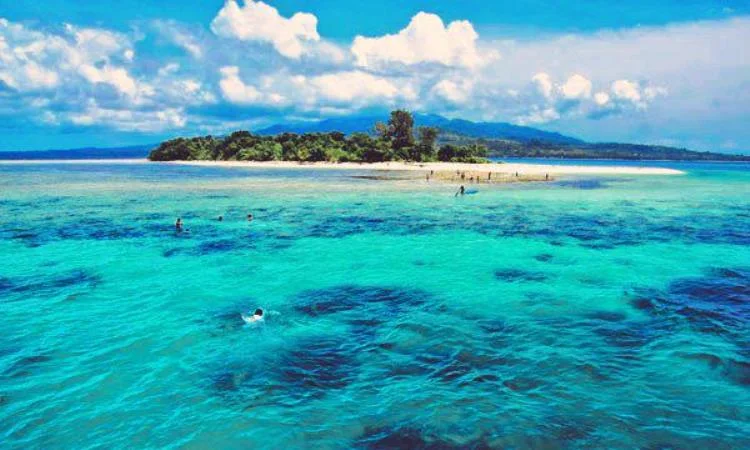
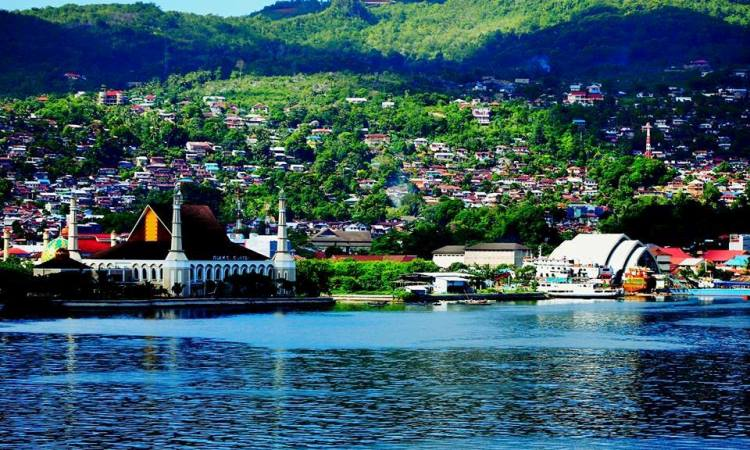
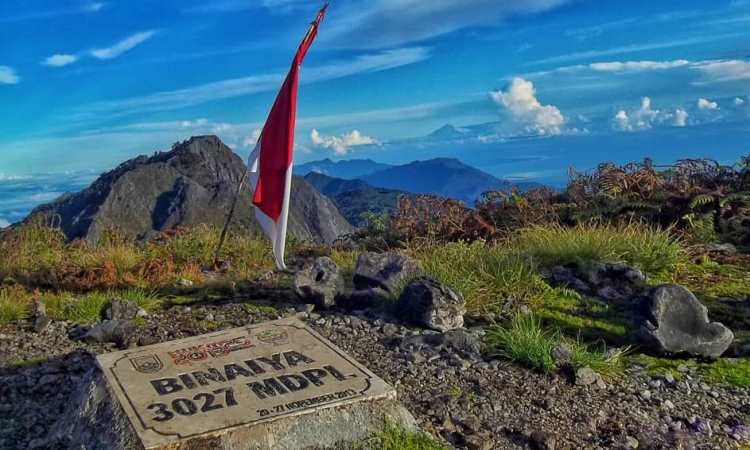
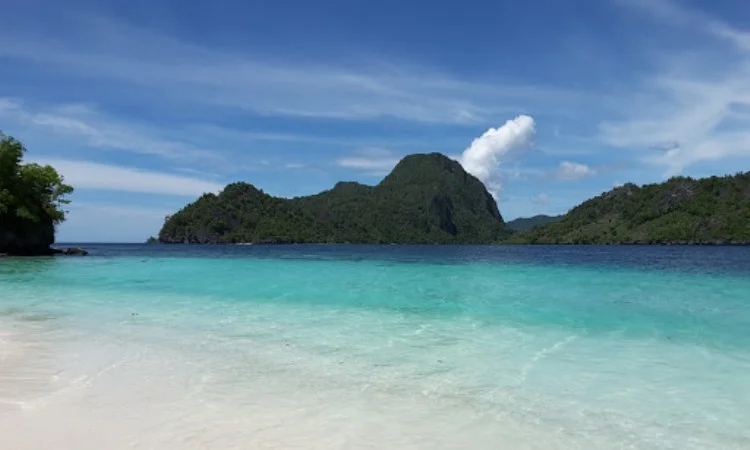
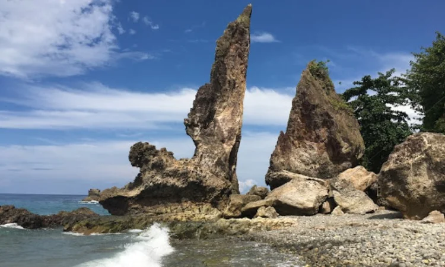
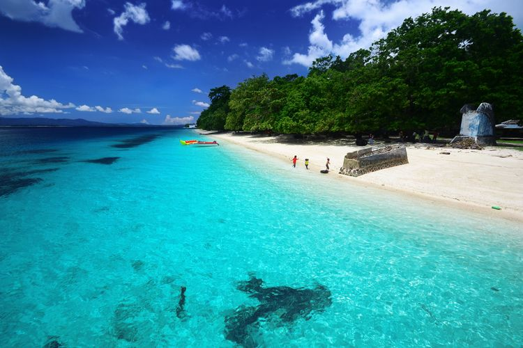
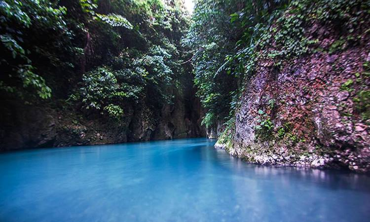
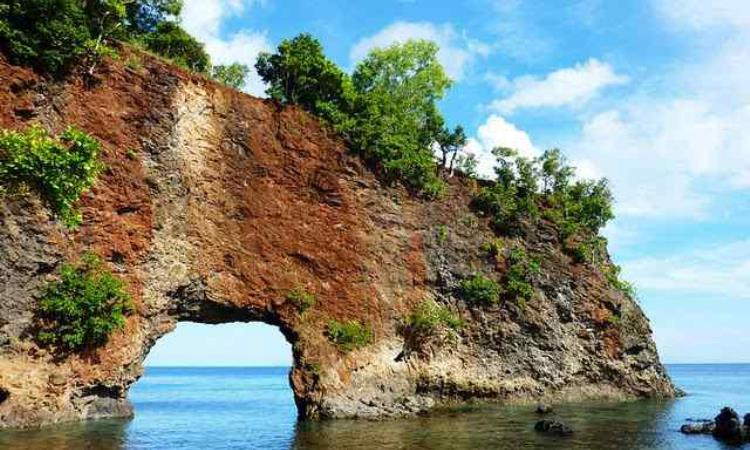
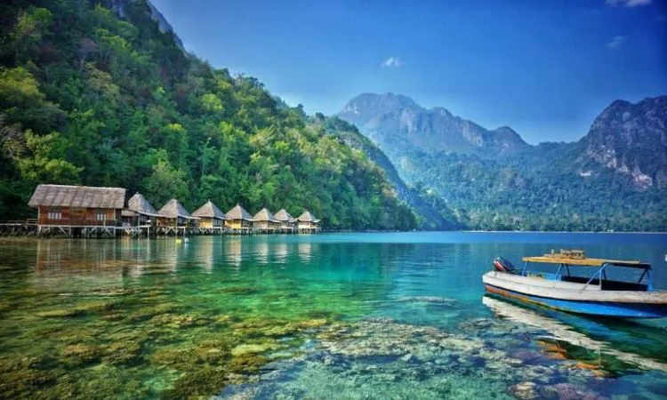

1. Pulau Nusa Pombo
Tempat wisata bahari yang satu ini memiliki keanekaragaman ekosistem dan hayati yang tinggi. Di Pulau Nusa Pombo berbagai aktivitas alam seperti tracking, memancing, menyelam, snorkeling, berenang, berjalan kaki mengelilingi pulau, dan mengamati burung dapat dilakukan.

2. Teluk Ambon
Pesona yang dimiliki Teluk Ambon yang ada di Maluku Tengah ini seolah mampu menarik minat para wisatawan. Di teluk ini wisatawan dapat melakukan berbagai kegiatan seperti sailing, diving, dan memancing. Untuk kalangan muda, terdapat juga beberapa spot foto untuk swafoto bersama teman-teman.
Sedangkan untuk orang dewasa, dapat menikmati keindahan Teluk Ambon sembari menikmati makan siang di restoran yang disediakan di samping tempat wisata tersebut. Destinasi ini juga cocok untuk Anda yang suka suasana alam.

3. Gunung Binaia
Dari ketinggian 0 meter hingga 3055 meter diatas permukaan air laut, membuat Gunung Binaia sebagai gunung tertinggi se-provinsi Maluku. Gunung Binaia merupakan rekomendasi tempat wisata yang tepat bagi yang hobi mendaki gunung.
Terdapat beberapa sungai di bagian kaki gunung dengan bentangan seluas 6-8 meter. Karena Gunung Binaia terletak di daerah pedalaman, sehingga hampir tidak ada fasilitas yang disediakan. Namun, tetap bisa menginap di beberapa rumah adat penduduk yang disediakan untuk para pendaki.

4. Pulau Osi
Pulau Osi dikelilingi oleh banyak laut dangkal dan indah dengan dihuni berbagai jenis ikan. Lautnya yang jernih seolah terasa sedang ada di dalam aquarium. Warna warni ikan di laut juga terlihat dengan mata telanjang akibat saking jernih airnya.
Terdapat jembatan yang memanjang ke laut di ujung pulau tersebut. Pengunjung bisa menikmati keindahan laut secara dekat dari jembatan ini. Penghuni pulau tersebut rata-rata memiliki mata pencaharian sebagai nelayan. Sehingga, aktivitas nelayan menangkap ikan juga banyak ditemui di Pulau Osi.

5. Batu Layar
Batu layar merupakan destinasi wisata berupa batu karang sangat besar yang tersusun di tepi jalan raya. Disebut Batu Layar karena batunya berbentuk seperti layar kapal. Tempat ini banyak dikunjungi karena mudah untuk dijangkau.
Tempat wisata Batu Layar populer dikalangan para fotografer karena memang cocok dijadikan objek fotografi. Meskipun tidak memiliki kisah dibaliknya, batu ini memiliki daya tarik dengan ukurannya yang sangat besar.

6. Pantai Liang
Pada tahun 1990-an, Pantai Liang pernah dinobatkan oleh UNDP-PBB sebagai salah satu pantai terindah. Menikmati keindahan pantai dengan bermain air dan berenang akan sangat cocok untuk mengisi waktu liburan. Apalagi air laut di Pantai Liang jernih dengan memancarkan warna kebiru-biruan.
Lokasi pantai tersebut dengan pusat kota Ambon juga lumayan dekat, hanya sekitar 40 km. Tiket masuknya juga tidak mahal, hanya dengan mengeluarkan 15 ribu saja sudah bisa menikmati keindahan Pantai Liang.

7. Pulau Banda
Pulau Banda atau yang sering juga disebut Pulau Naira ini terletak di Maluku Tengah tepatnya ada di Kepulauan Banda. Pulau tersebut juga mempunyai pemandangan bawah laut yang sangat indah. Itu karena banyak flora dan fauna yang hidup dibawahnya. Jika dihitung, ada sekitar 250 biota laut yang senantiasa dilestarikan di Pulau Banda.
Bahkan, lumba-lumba dan ikan paus merupakan mamalia besar yang dapat dilihat saat berkunjung ke tempat wisata tersebut. Mamalia besar tersebut bisa disaksikan langsung apabila pengunjung menjelajahi Pulau Banda menggunakan perahu.

8. Danau Tebing Makariki
Eksotisme tebing yang tinggi, warna air yang biru, ditambah sungai yang dingin, dan berada di tengah hutan, membuat tempat ini tidak membosankan. Danau Tebing Makariki ini terletat di kaki gunung Binaia.
Disebut juga sebagai surga yang tersembunyi karena lokasinya terpencil dan aksesnya yang cukup sulit. Walaupun membutuhkan usaha lebih untuk menjangkau tempat wisata satu ini, namun akan terbayar lunas dengan keindahan alam yang disuguhkan.

9. Pantai Pintu Kota
Pantai Pintu Kota adalah salah satu tempat wisata yang sayang sekali dilewatkan apabila berkunjung ke Maluku Tengah. Ada banyak tebing yang berbentuk seperti lorong akibat terkikis oleh air laut di pantai ini. Pantai ini ramai dikunjungi oleh kalangan anak muda yang tertantang dengan hiking dan petualangan melewati jalan setapak.
Batuan yang tajam, ombak yang besar, dan pantainya yang berkarang membuat kawasan ini tidak diperbolehkan untuk berenang. Sehingga kawasan ini hanya cocok untuk menikmati keindahan alam sembari berfoto. Jika merasa lapar, di tempat wisata ini juga ada yang menjual snack seperti rujak buah, pisang goreng, dan minuman hangat.

10. Pantai Ora
Pantai Ora yang dikenal sebagai Maldivesnya Indonesia ini terletak di Pulau Seram. Pantai ini juga sering menjadi tujuan wisata untuk berbulan madu sepasang suami-istri. Alasannya karena memiliki air laut yang jernih dan pasir yang berwarna putih bersih sehingga akan menciptakan suasana romantis.
Aktivitas seperti snorkeling dan diving juga cocok dilakukan di Pantai Ora. Sehingga para packpaker tidak usah ragu lagi untuk berkunjung. Sebenarnya, air lautnya yang bening membuat keindahan bawah laut sudah bisa terlihat dengan jelas tanpa harus menyelam.
